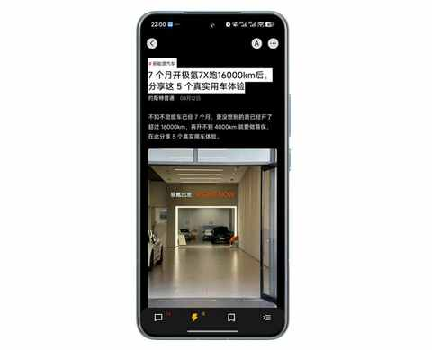
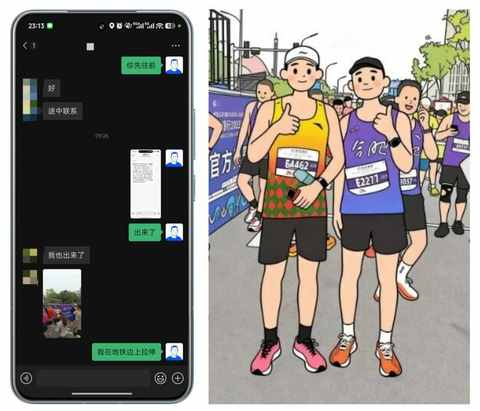
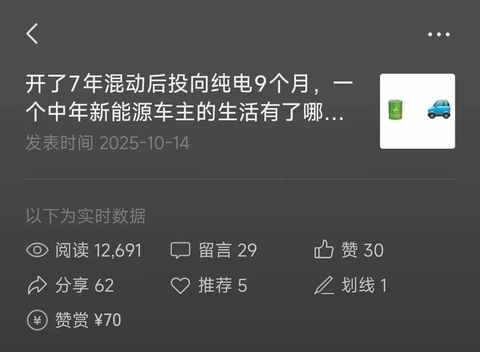
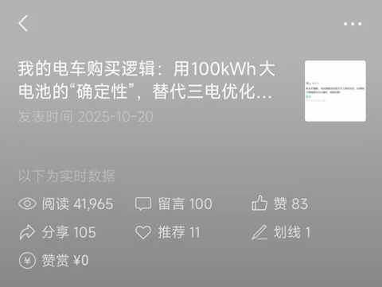

90年，35岁，日更90天，有了这 3 个意外收获
一、引子
今天是日更的第 90 天，难以想象，居然已经连续更新了89 天。
整个过程并不痛苦和纠结，但每天都有这样的时刻，特别是第 75 天之后，每次确定选题到开始写都需要好几个小时，甚至是一整个白天。
最近大多都是晚上写，即便是早早吃过晚饭，基本也要到 9 点后才能开始写，因为 Deadline 是第一生产力！
这个过程谈不上收获满满，但绝对是收获颇丰的，有几个意料之外的收获，值得和大家分享分享。
二、这 3 个意外收获
1️⃣ 成为少数派作者
作为一名少数派的用户，买过出的手机壳和 Notion 课程，基本每天都会刷刷上面的文章和动态，播客有更新也会第一时间收听。
完全没有想到，会成为少数派的作者，目前已更新 14 篇文章，阅读量达到 10w+

刚开始的时候，完全是抱着试一试的心态，把在公众号里面阅读量尚可的文章搬到少数派，没想到第一篇文章便获得不错的反馈。

从现在的角度去回顾，不得不感慨的正反馈的重要性，让我在有点迷茫的时候，快速找到了方向和信心。
2️⃣ 与跑友线下见面
在合肥马拉松的赛前，密集的在公众号发了一些关于跑步和比赛的内容，在一篇图文的评论区，和一位当地同在 E 区的跑友约好，一起跑进 140，争取 PB。

在骆岗公园与2.5万人一起起跑！我的合肥“首马”小事记
在开跑前，顺利在 E 区会晤，不过由于我等卫生间的时间过长，便让跑友先往前冲，最后在终点顺利见面，在其他跑友的帮助下合影留念。
我们都达成了赛前小目标：我顺利跑进 140，他不仅跑进 140而且 PB 了。
合影后，我们各自散去，希望后面的比赛还能有缘再会，再次同场竞技。
3️⃣ 公众号文章 10w+
刚开始更新公众号的时候，没有想过自己能写一篇 10w+的文章，但伴随着推荐算法的迭代更新，后台数据能看到一个明显趋势，推荐流量占比很高。
7 月份和 9 月份都有一篇文章过 9w 阅读，当时看完数据之后，觉得可能 10w+可能就在某一天突然达到。
纯电车自驾游： 6 天 3300km 之后有了 5 个感受

终于下定决心！用了6年Apple Watch，我为什么决定放弃它？
果然，在国庆假期后，更新的文章，在发布第二第三天，突然流量暴涨，顺利突破 10w+，后面稳定在 19w 多点便不再推流。
开了7年混动后，我为何最终投向纯电？一位车主的心路历程

同时，受到留言区的启发，趁热打铁继续更新了两篇相关文章：
开了7年混动后投向纯电9个月，一个中年新能源车主的生活有了哪些新变化？

我的电车购买逻辑：用100kWh大电池的“确定性”，替代三电优化的“不确定性”

主要有下面 3 个体验：
体验①：破圈
之前破圈这个词，比较多的时候是在商业类的文章里面看到，诸如：网红破圈了、某款产品破圈了、公司破圈了等等。
这次，对破圈有了具象化的理解，天南地北的网友们，各自都有着不同的用车场景和需求，再叠加不同的地理条件，导致对某件事的看法截然不同。
有些人会理性分析和探讨，有些人会发布不同想法，有些人会委婉点嘲讽，有一小撮人会直接攻击……
体验②：留言看不过来
之前把留言标记好，然后显示出来，大概是一天做几次的事情。
但是那几天，基本上每个小时刷新留言区便又有了一些新留言，当你放出来的留言足够多，又有很多人去不同的留言下方留言。
那几天最大的感受是：留言看不过来！
体验③：得进步
积累了不少选题，但大多都写不成文章，一篇言之有物的文章。
想在留言区和一些网友辩论辩论，但发现想回复的内容不够说服力，甚至 Ai 都建议我别回复！
……
类似这种时刻越多，越感知到：得进步，得提高！
三、结语
回望这九十天，最大的惊喜莫过于这些“意外的收获”。
它们让我相信，只要坚持从自己的本心出发，哪怕不知道结果会怎么样，也会有很多超出预期的收获。
日更终有尽时，但由此带来的好奇心与行动力，将会延续下去。
近期文章
不禁想问问大家，被Ai工具省下来的时间，都用来做什么了呢？
听播客5年，日均108分钟：这3个收获，让我认识到“声音”的力量
小米高端化成了吗？拿15S Pro当主力机4个月，我有这5个真实感受
90 年，35 岁，E区出发，即将在福州解锁首全马
嘿！还记得“为QQ等级挂机”的岁月吗？来晒晒你的等级吧！
11 个月，开极氪7X跑两万公里，用车总结及好物分享
中年减肥成功2年后，才发现运动形式真不重要，守住这3点才能不反弹！
我的两个配图利器：两个APP强强联合，实现1+1 > 2的视觉升级
别慌！和所有Intel版Mac用户共享：3个让我们继续用的理由和2个续命秘籍
中年减肥成功2年后，才发现这5个坑当初要是有人点醒我该多好！
中年减肥成功2年后，才发现维持体重靠的不是毅力，而是这5个微习惯